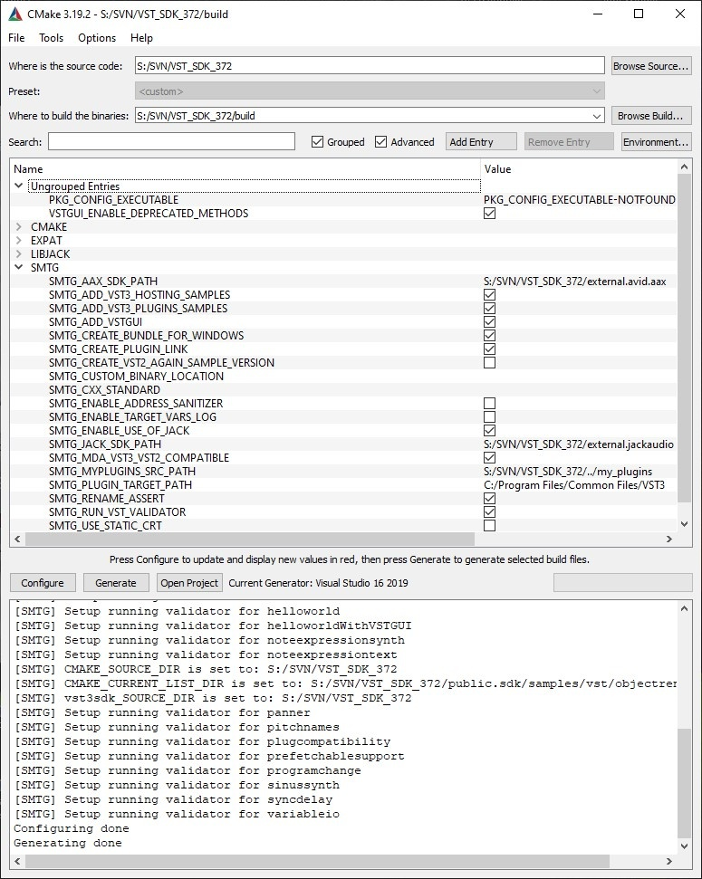

Using cmake for building VST 3 plug-ins
On this page:
- CMake for building VST 3 plug-ins
- Command line for
- Command line for macOS
- On Linux with QtCreator
- Use of cmake-gui
- Available SMTG cmake options
- Using your IDE for compiling the examples
Related pages:
This tutorial explains how to use cmake with VST 3 SDK.
CMake for building VST 3 plug-ins
The SDK provides a set of cmake files allowing you to compile the included samples and to develop new plug-ins.
- Download cmake from: https://cmake.org or use a package manager for your OS (See How to set up my system for VST 3).
- You can use the command line or the cmake editor (cmake-gui).
Command line for
Example for building "Microsoft Studio 16 2019" solution:
// go in to the folder where you extracted the VST 3 SDK
mkdir build
cd build
cmake.exe -G "Visual Studio 16 2019" -A x64 "..\vst3sdk"
// or without symbolic links
cmake.exe -G "Visual Studio 16 2019" -A x64 "..\vst3sdk"-DSMTG_CREATE_PLUGIN_LINK=0
// or with symbolic links but using the user location (doesnot request admin right)
cmake.exe -G "Visual Studio 16 2019" -A x64 "..\vst3sdk"-DSMTG_PLUGIN_TARGET_USER_PROGRAM_FILES_COMMON=1
// note: you can find the string definition for differentVisual Studio Generators in the cmake online documentation
Command line for macOS
Example for building Xcode project:
// go in to the folder where you extracted the VST 3 SDK
mkdir build
cd build
/Applications/CMake.app/Content/bin/cmake -G"Xcode" "..vst3sdk"
On Linux with QtCreator
You can use QtCreator 2.3.1 (or higher)
start QtCreator 2.3.2
open the CMakeLists.txt located at the top of the VST 3 SDKfolder
click on the menu Build->Run CMake
Use of cmake-gui
start the CMake (cmake-gui) application
set "Where is the source code" to the location of the"VST3_SDK" folder
set "Where to build the binaries" to a build folder of yourchoice
click on "Configure"
click on "Generate" for creating project/solution

Example of cmakegui application on Windows
- Compile with cmake command line
cd build
cmake --build
- Choose a specific compiler with cmake (command line on Linux)
cmake -DCMAKE_C_COMPILER=/usr/bin/clang-DCMAKE_CXX_COMPILER=/usr/bin/clang++
or
cmake -DCMAKE_C_COMPILER=/usr/bin/gcc-DCMAKE_CXX_COMPILER=/usr/bin/g++
Available SMTG cmake options
- SMTG_AAX_SDK_PATH: Here you can define where the AAX SDK is located (if needed)
- SMTG_ADD_VST3_HOSTING_SAMPLES: Add VST 3 hosting samples to the solution (default ON)
- SMTG_ADD_VST3_PLUGINS_SAMPLES: Add VST 3 plug-in samples to the project (default ON)
- SMTG_ADD_VSTGUI: Add VSTGUI support (default ON)
- SMTG_BUILD_UNIVERSAL_BINARY: Build universal binary (32 & 64 bit) (Mac only)
- SMTG_COREAUDIO_SDK_PATH: Here you can define where the COREAUDIO SDK is located (Mac only, if needed)
- SMTG_CREATE_BUNDLE_FOR_WINDOWS: Create bundle on Windows for the VST 3 plug-ins (new since 3.6.10! Windows only) (default ON)
- SMTG_CREATE_PLUGIN_LINK: Create symbolic link for each VST 3 plug-in in ${VST3_FOLDER_NAME} folder (you need to have Administrator rights on Windows or change the Local Group Policy to allow the creation of symbolic links) (default ON)
- SMTG_CREATE_VST2_AGAIN_SAMPLE_VERSION: Allows you to create the VST 2 version of the Sample Plug-in AGain, be sure that you have copied the VST 2 interfaces into the folder VST_SDK/VST3_SDK/pluginterfaces/vst2.x (default OFF)
- SMTG_CUSTOM_BINARY_LOCATION: Customize output location for binaries
- SMTG_CXX_STANDARD: C++ standard version used for plugins: 14, 17, 20
- SMTG_ENABLE_ADDRESS_SANITIZER: Enable Address Sanitizer
- SMTG_ENABLE_TARGET_VARS_LOG: Enables to log target variables for debugging (new since 3.6.11!) (default OFF)
- SMTG_ENABLE_USE_OF_JACK: Allows you to create the audiohost application using Jack (default OFF)
- SMTG_MDA_VST3_VST2_COMPATIBLE: Build the MDA examples as a replacement for their VST 2 counterpart (default ON)
- SMTG_IOS_DEVELOPMENT_TEAM: Needed for building the InterAppAudio and AUv3 examples for iOS (Mac only)
- SMTG_MYPLUGINS_SRC_PATH: Here you can add your VST 3 plug-ins folder
- SMTG_PLUGIN_TARGET_PATH: Here you can redefine the VST 3 plug-ins folder
- SMTG_PLUGIN_TARGET_USER_PROGRAM_FILES_COMMON: use FOLDERID_UserProgramFilesCommon as VST 3 target path (Windows only) (default OFF)
- SMTG_RENAME_ASSERT: Rename ASSERT to SMTG_ASSERT to avoid conflicts with 3rd party libraries (default ON)
- SMTG_RUN_VST_VALIDATOR: Run the VST validator on VST 3 plug-ins each time they are built (default ON)
- SMTG_USE_STATIC_CRT: Use static CRuntime on Windows (option /MT) (default OFF) (Windows only)
Preparation on Windows
Generated VST 3 Microsoft Visual Studio Projects using the cmake included in the SDK will create by default symbolic links for each built plug-in in the official VST 3 folder, in order to allow this on Windows you have to adapt the Group Policy of Windows. See Here!
If you do not want to create this link, call cmake with this parameter:
-DSMTG_CREATE_PLUGIN_LINK=0You could choose the new user location for VST 3 plug-ins, call cmake with this parameter:
-DSMTG_PLUGIN_TARGET_USER_PROGRAM_FILES_COMMON=1`
Using your IDE for compiling the examples
- Solution/project (vstsdk.sln/vstsdk.xcodeproj) is generated in the "build" folder.
- The created plug-ins are located in the "build" folder, in sub-folders /VST3/Release or /VST3/Debug.
- In order to allow a DAW to find these plug-ins you have to create links from the official VST 3 Locations to them.